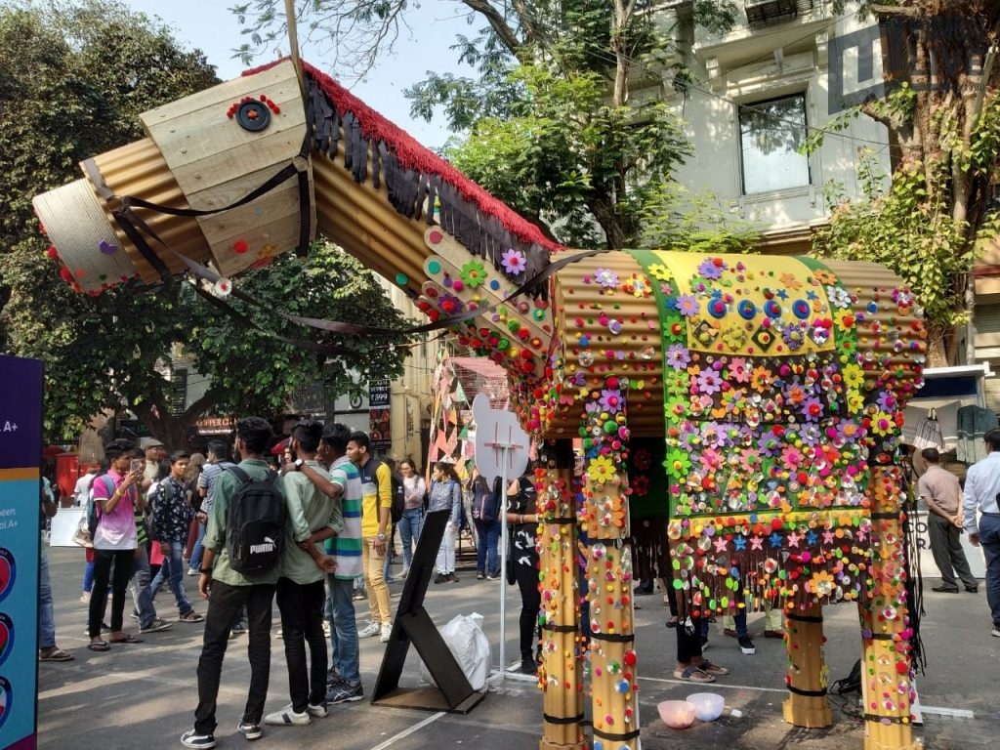
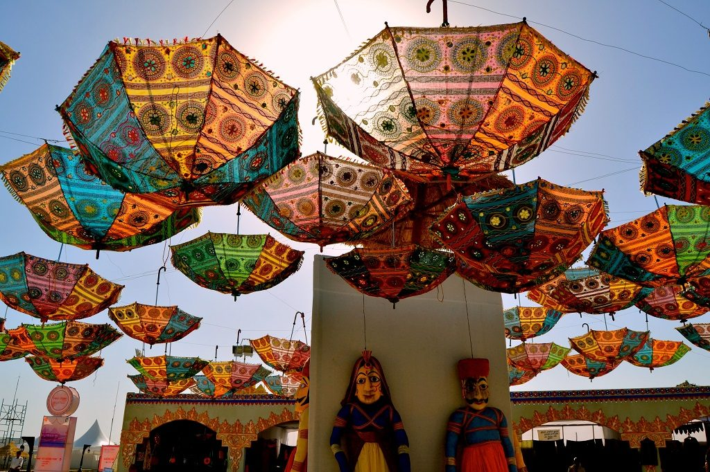

Kala Ghoda Arts Festival (Mumbai, Maharashtra): An annual multicultural festival celebrating art, music, dance, theater, and literature, held in the historic Kala Ghoda area of Mumbai.
Kochi-Muziris Biennale (Kochi, Kerala): A contemporary art exhibition held every two years in Kochi, showcasing works by Indian and international artist.

Jaipur Literature Festival (Jaipur, Rajasthan): One of the largest literary festivals in the world, featuring renowned authors, poets, and thinkers from India and abroad.

International Film Festival of India (IFFI) (Goa): A renowned film festival that brings together Indian and international films, directors, actors, and film enthusiasts.

Rann Utsav (Gujarat): A cultural extravaganza held in the white desert of Kutch, featuring folk dances, music, art, and crafts of the region.
Navratri and Garba/Dandiya Raas (Gujarat): A nine-night festival dedicated to the Hindu goddess Durga, with energetic Garba and Dandiya Raas dance performances.

Ziro Festival of Music (Arunachal Pradesh): A music festival held in the scenic Ziro Valley, showcasing indie bands, folk music, and tribal culture.